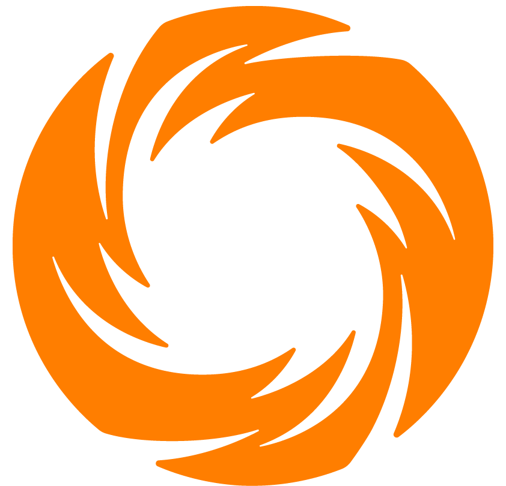
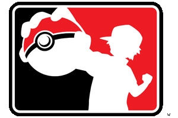
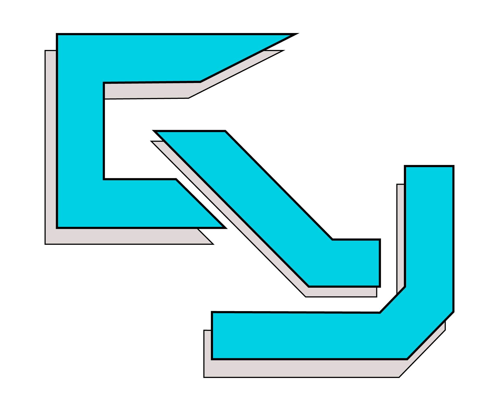

- Implemented view extensions for existing REST API endpoints, enhancing claim data transfer from THAA, a claims management system, to the EFIT fraud investigation portal.
- Designed and developed two new API endpoints to support data integration between enterprise applications.
- Worked within an Agile Scrum team on sprint planning, code reviews, and iterative software delivery.
- Partnered with engineering teams and stakeholders to gather requirements, troubleshoot integrations, and deliver reliable backend solutions.
Connor Lafferty
Computer Science | Digital Media and Design | University of Connecticut
Hey there! I'm Connor, I go to UConn, make video games, create content, and develop the Daily Campus' website. Please take a look around and learn a bit about me!
Soft Skills
Hired and managed a team of 40 for two years, lead the Daily Campus through tough financial times, turned it profitable.
Technical skills
API design, C#, C++, CSS/HTML
Work experience
3 rolesSoftware Engineer Intern
Information Technology Intern
- Repaired devices across the school district, from Chromebooks to PCs.
- Resolved support tickets by troubleshooting technology and helping end users.
- Used Google Admin and Active Directory to catalog and manage network devices.
Managing Editor
- Hired and managed 42 employees each year to produce a print newspaper every weekday.
- Managed payroll and kept employee timecards up to date for university audits.
- Coordinated nightly with the master printer at Valley Publishing to ensure each issue went to print.
- Designed print editions in InDesign, copy edited stories to AP style, and sourced and edited photographs for print.
Projects
5 projectsA Fish In Sea
- Developed a gamified to-do list that rewards completed real-life tasks with fishing mini games, progression, and gems.
- Used a CI/CD workflow to repeatedly test and refine the game.
- Created in Unity using C#.

Riftbound Database
Pokemon Projects

Gummyoshi YouTube Channel
- Produced video guides, tutorials, and news updates covering the gaming industry.
- Storyboarded, recorded, edited, and produced more than 1,300 videos using Premiere Pro and Photoshop.
- Grew the channel to over 20,000 subscribers and approximately eight million views.
 Iron to Riot
Iron to Riot
- Developed portfolio for my Riot Games application across 120 days of daily uploads.
- Gained over 1,000 followers and the support of many Riftbound content creators.
- Had a lot of fun and worked real hard :]
Contact
Whether you're a recruiter, student, or someone who saw my videos, always feel free to reach out through email or LinkedIn :]